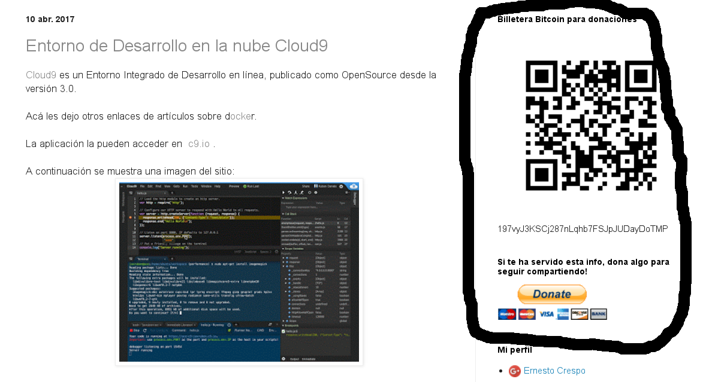

Reestructuración del blog.
Posted on dom 07 mayo 2017 in General • 2 min read
Tengo varios días sin escribir algo en el blog, primero está la situación local, y lo otro es que ando pensando hacer una reestructuración de los blogs que tengo.
Los blogs que tengo son:
- ernestocrespo.blogspot.com: Blog en inglés que lo tengo algo descuidado. Este blog lo pienso migrar de primero al url http://blog2.crespo.org.ve y usaré pelican para el contenido.
- blog.crespo.org.ve: Versión en Español del blog, que tiene más de 300 posts. Como este blog es el que tiene más contenido, la migración será por etapas teniendo una versión beta con nombre blog3.crespo.org.ve, cuando esté lista la migración pasará a ser blog.crespo.org.ve.
- Medium: Este blog será para temas generales no técnicos o algunos técnicos (muy pocos).
- ernestocrespo13.wordpress.com: Este normalmente es un respaldo del blog en Español, ahora manejará los posts de ambos blogs en inglés y español como respaldo.
En un futuro dejaré de publicar en blogspot y wordpress dejando sólo los blogs en pelican.
Otro actividad que tengo es levantar www.crespo.org.ve, y que los dos blogs junto con el de Medium estén enlazaos allí.
El otro punto es que voy a empezar a utilizar acortadores de URL que permitan monetizar el blog, así como ya he colocado enlaces para recibir donaciones vía Billetera Bitcoin o paypal.

A continuación les dejo una imagen donde se encierra en un recuadro negro la billetera bitcoin y el formulario para donar por medio de paypal.

¡Haz tu donativo! Si te gustó el artículo puedes realizar un donativo con Bitcoin (BTC) usando la billetera digital de tu preferencia a la siguiente dirección: 17MtNybhdkA9GV3UNS6BTwPcuhjXoPrSzV
O Escaneando el código QR desde la billetera: